Oma
Oma · Aomori
Oma
Highlighted on the Aomori map.
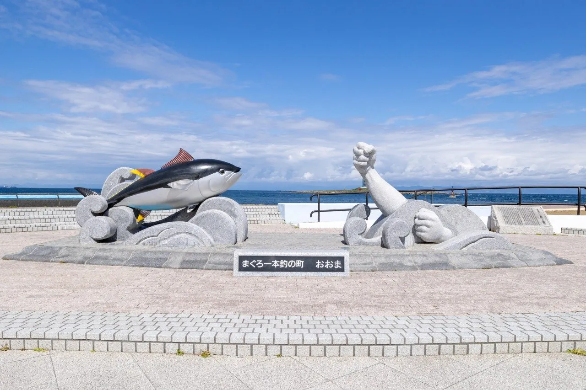
Stay
サンホテル大間
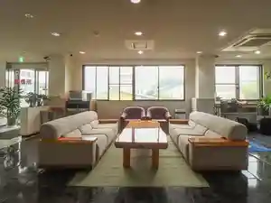
Sanhoteru Oohazama
Dining
巴小 cafe
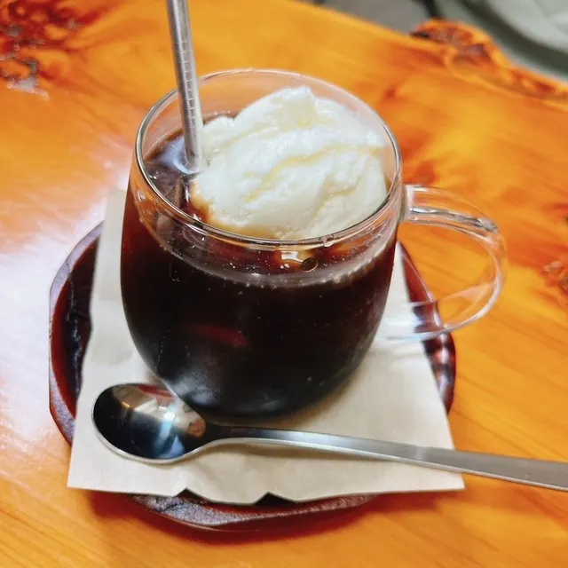
Tomoe Shou Cafe
あべ旅館
Abe Ryokan
魚喰いの大間んぞく
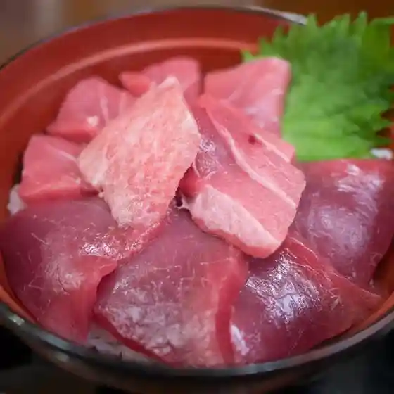
Sakana Kui No Oohazama Nzoku
魚忠
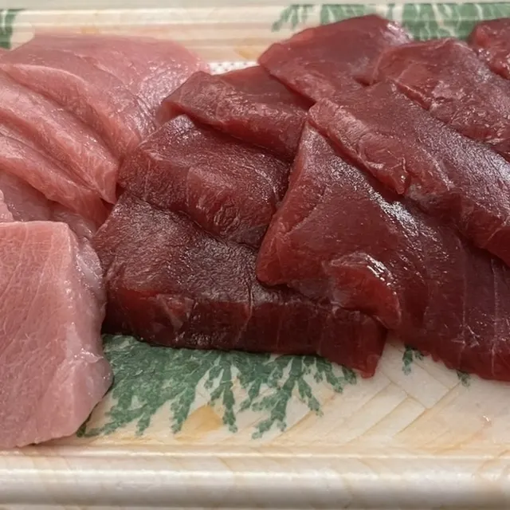
Sakana Tadashi
大間観光土産センター
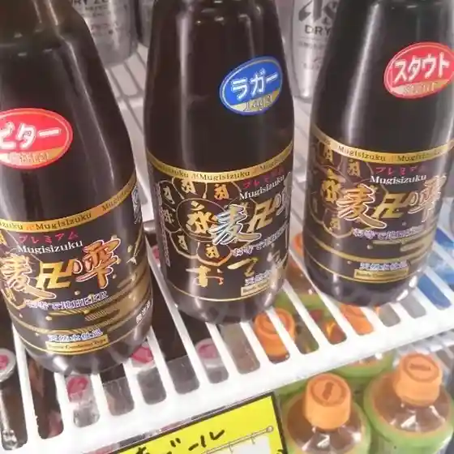
Oohazama Kankou Miyage Sentaa
浜寿司
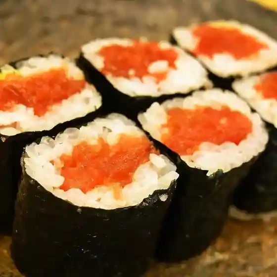
Hama Sushi
あけみちゃん号
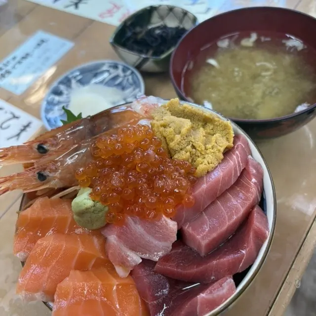
Akemichan Gou
ばんや
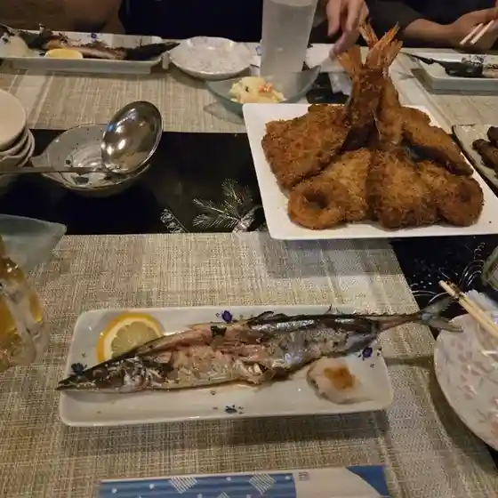
Banya
大間温泉海峡保養センター レストラン
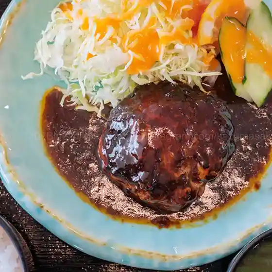
Oohazama Onsen Kaikyou Hoyou Sentaa Resutoran
海遊亭
Kaiyuu Tei
日本料理 ささ喜
Nihonryouri Sasa Ki
体験型民宿 葵
Taiken Kata Minshuku Aoi
寺川食堂
Terakawa Shokudou
グリーンストアー
Guriinsutoaa
マエダストア 大間店
Maedasutoa Oohazama Mise
三平
Sanpei
LAWSON 大間町店
Lawson Oohazama Machi Mise
すみよし食堂
Sumiyoshi Shokudou
開運丸
Kaiun Maru
海峡日和 大間店
Kaikyou Hiyori Oohazama Mise
御宿 かもめ
Onjuku Kamome
喫茶店ルパン
Kissaten Rupan
大間亭レストラン
Oohazama Tei Resutoran
プラザ
Puraza
Sights
Quasi-National Park, Cape Oma
The black and white Oma Cape Lighthouse stands on Benteto Island of Oma Cape, which is designated as part of Shimokita Hanto Quasi-National Park.
Oma Tuna Pole-Fishing Experience
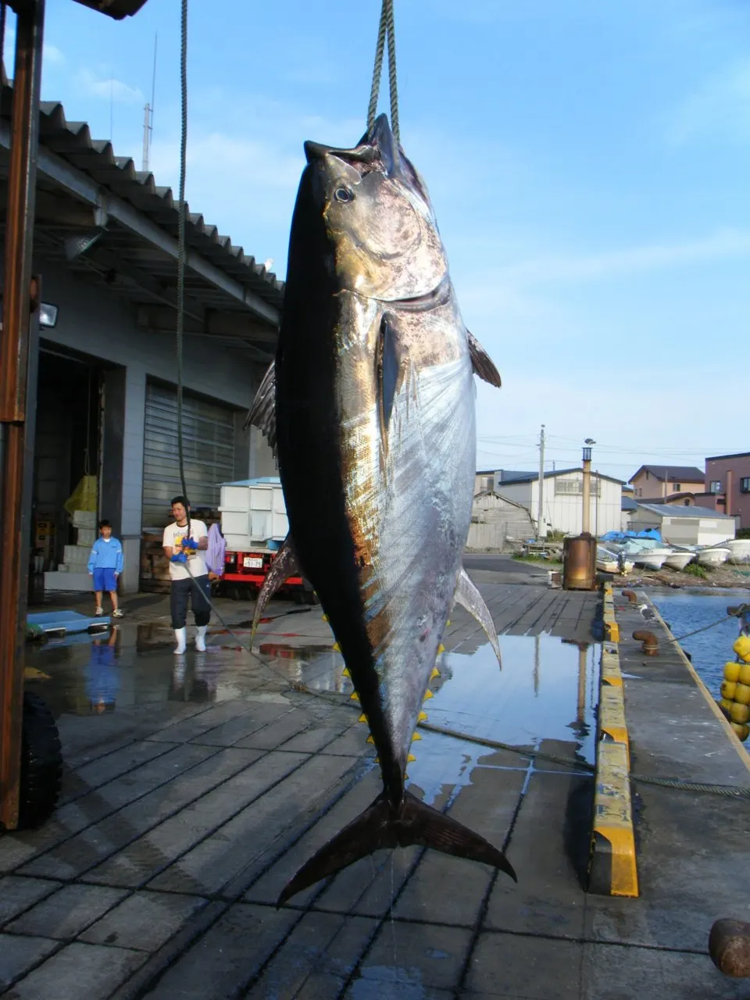
Program to try pole fishing for Oma's prized bluefin tuna after a lesson from fishermen.
Tsugarukaikyo Ferry Oma Ferry Terminal
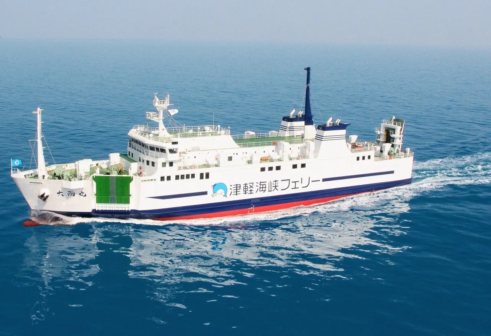
The Oma Ferry Terminal has a cafeteria, stores, and Internet booths. Free Wi-Fi is available.
Oma Tuna Fishermen Local Night Tour
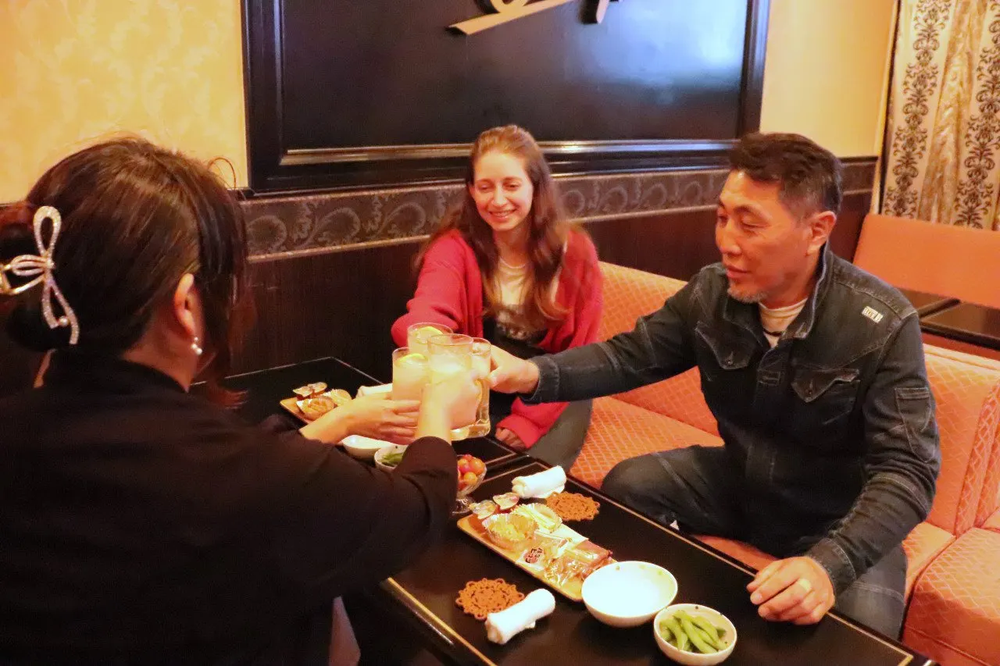
Night tour with tuna fishermen including sushi of Oma tuna and rare cuts.
Oma Tourist Souvenir Center
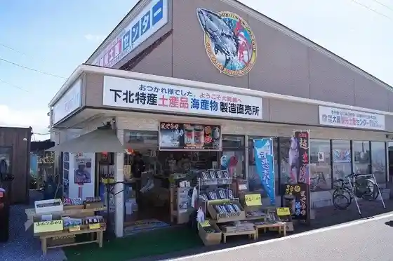
Souvenir shop opposite the tuna monument at Cape Oma, selling local tuna, sea urchin and scallops.
Ohmazaki Lighthouse
Black-and-white lighthouse lit in 1921 on Bentenjima island 600 m off Cape Oma.
Omazaki Tent Site
Free-site lawn campground a few minutes' walk from Cape Oma.
Ohma Shukubo Fugen-in Private Temple Stay
Temple stay for one group a day in a hiba-wood temple, with Oma tuna for dinner.
Omazaki Rest House
Glass-walled rest house at Cape Oma with views of Bentenjima and Hokkaido.
Oma Fishing Port Landing Area
Port where Oma's pole-caught bluefin tuna are landed.